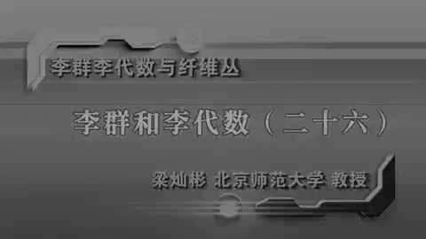
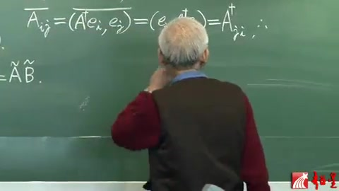
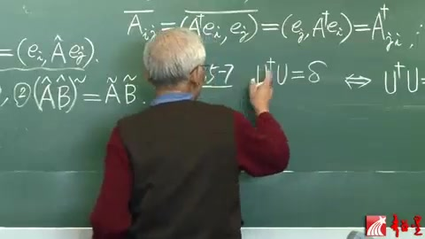
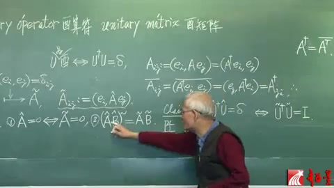
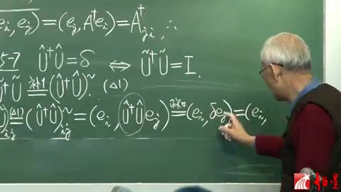
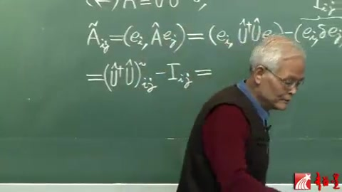
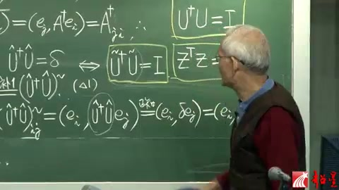
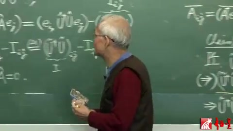
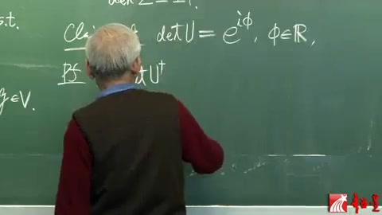
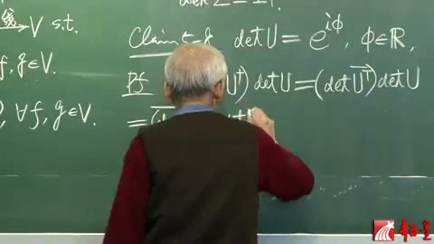

李群李代数 第26讲 酉群（续）¶
自动生成的课程注解文档（共 6 个段落，原始视频）
目录¶
段落 1¶
时间： 00:00:00 ~ 00:05:00
📝 原始字幕
假如,這個事情當我們現在到了福的空間,加班呢,就說那個內機,或者說數吧,這個舉戰無非,加班就相當於每個居戰員,加班嘛,那也是數,數呢一般都是福署,所以加班跟不加班呢,一般呢是不一樣的,但是假如你那麼想, 假如這個福署預立退回到實署的話,那個包就沒有了,那麼那A-Dagger是什麼?不就是A-Transpose嘛,不就是,以現在看看,這個Z,我們最關心就是他那個Z-Transpose,那麼我們對於A呢,我們說最關心是A-Dagger,但是A-Dagger跟那個,Dagger跟Transpose,差不多的,只不過因為是福,他加了個包 我就是讓你注意,這兩個是,好多地方都很像的,你可以這麼粗略地說,就是這個友群呢,有點像那個鄉交群呢,來個福署話,這個答案很粗略這句話,那麼你就很多事情就比較好記,也好懂了 好了,在進一步更像的呢,就是說,你看這個O of M的群元Z,是一個硬瘦或者叫粘量,那麼不夠具體,但是一取基底呢就具體的,除了一個具戰,那麼由於他是這個O of M這個群的群元,所以這個具戰呢,滿足這麼簡單的條件, 這個呢,就是說Z是正交具戰,我們當然要問了,這個協體的U啊,它是友群的,就不是友群嗎,U of M是友群的這個元素啊,那麼取了基底以後呢,它就成具戰了 現在那個A是一般的算符,現在我們具體就有算符就是U了,那麼我們想問問這個友算符U的具戰,跟友算符的Decker的具戰之間,還滿足一個什麼關係,那麼這個呢,就是我們的 我們先寫這吧,這個第五節的Came Seven,說的是什麼呢,說的就是,對於友群的群元,也就是友算符是吧,它的那個 具戰它是滿足一個跟它非常像的具戰等式的,怎麼就非常像,非常像就不完全一樣,如果說差別在哪兒,這個得多加個8,加8不就是相當於Decker了嗎,所以我要說的就是那個U,作為具戰呢,它的Decker而不是 Transpose是Transpose在加8,Decker在成上這個具戰U呢,也是等於單位具戰的,前面那個條件就是如果這個U是個友算符的話,那麼U是個友算符就充分必要於它的具戰的滿足這個,滿足這個的具戰呢 那就叫做U那就是Matrix有具戰了,那麼所以右邊呢,就是說U的具戰是有具戰,左邊呢就是U的算符呢,是有算符,那麼有算符那不就是這個嗎,所以呢U DeckerU呢是等於 Decker,我們樹裡的CAM7就是這麼一個充分必要的條件,那麼我們要證明這個,書上那個證明寫的過於簡單,其實呢是有點跳,我現在把這個證明補出來
课程截图：



注解¶
这段字幕来自梁灿彬教授《李群李代数与纤维丛》课程的第26讲，核心内容是建立酉群（Unitary Group）与正交群（Orthogonal Group）的类比关系，并引入酉矩阵的判定条件（Claim 5-7）。以下是对新内容、新概念及公式的深度注解：
一、核心公式识别与符号解释¶
字幕中涉及的关键公式及概念对应关系如下（已根据上下文还原标准数学表述）：
1. 厄米共轭与转置的关系（复空间 vs 实空间）¶
- 公式：\(A^\dagger = (A^*)^T\) （即“Dagger = 转置 + 复共轭”）
- 符号说明：
- \(A^\dagger\)（读作 "A dagger"，即字幕中的"A-Dagger"）：厄米共轭（Hermitian conjugate），等于先取复共轭（complex conjugate，字幕中的"包"）再转置。
- \(A^T\)（字幕中的"A-Transpose"）：转置（Transpose）。
- 关键区别：在实数域（\(\mathbb{R}\)）上，\(A^\dagger = A^T\)（因为实数的复共轭是其本身）；在复数域（\(\mathbb{C}\)）上，两者不同。
2. 正交群的矩阵条件¶
- 公式：\(Z^T Z = I\)
- 符号说明：
- \(Z \in O(m)\)：正交群 \(O(m)\) 的群元（字幕中的"O of M"）。
- \(Z^T\)：矩阵 \(Z\) 的转置。
- \(I\)：单位矩阵（字幕中的"单位具戰"）。
- 物理意义：正交矩阵的逆等于其转置，\(Z^{-1} = Z^T\)。
3. 酉群的矩阵条件（Claim 5-7）¶
- 公式：\(U^\dagger U = I\) （或写作 \(U^\dagger = U^{-1}\)）
- 符号说明：
- \(U \in U(m)\)：酉群（字幕中的"友群"）的群元。
- \(U^\dagger\)：\(U\) 的厄米共轭（复共轭转置）。
- 核心结论（Claim 5-7）：算符 \(U\) 是酉算符（Unitary operator）当且仅当其在标准正交基下的矩阵表示是酉矩阵（Unitary matrix），即满足 \(U^\dagger U = I\)。
二、理论背景补充¶
1. 复内积空间与厄米共轭的必要性¶
在实向量空间中，内积 \((v, w)\) 是双线性对称的，正交变换保持内积不变，导致 \(Z^T Z = I\)。
在复向量空间中，内积是sesquilinear（半双线性）的，对第二个变量是反线性（共轭线性）的：
为了保持内积不变 \((Uv, Uw) = (v, w)\)，复空间中的"转置"必须包含复共轭操作，即引入厄米共轭 \(U^\dagger\)。这是字幕中"福署（复数）预立退回到实署（实数），那个包（复共轭）就没有了"的准确含义。
2. 酉群 vs 正交群的类比（"复数化"）¶
讲师强调的"友群有点像鄉交群（正交群）来个福署（复数）话"是深刻的数学直觉： - 正交群 \(O(m)\)：实内积空间的等距同构群。 - 酉群 \(U(m)\)：复内积空间的等距同构群。 - 关系：\(U(m)\) 可以看作是 \(O(2m)\) 的一个子群（通过将复向量空间 \(\mathbb{C}^m\) 视为实向量空间 \(\mathbb{R}^{2m}\)），但保持复结构不变。
3. 算符与矩阵的对应¶
- 抽象算符：\(U\) 是希尔伯特空间上的线性算符。
- 矩阵表示：选定基底 \(\{e_i\}\) 后，\(U_{ij} = (e_i, U e_j)\)。
- Claim 5-7 的重要性：建立了抽象算符性质（酉性）与具体矩阵方程（\(U^\dagger U = I\)）之间的等价性，使得可以用矩阵计算研究酉群。
三、通俗语言解释¶
核心类比：想象正交群是"实数世界的旋转"，酉群是"复数世界的旋转"。
- 实数世界：旋转矩阵的逆就是把它转置（翻转行列），即 \(Z^T = Z^{-1}\)。
- 复数世界：因为涉及到复数（有实部和虚部），简单的翻转不够，还需要把每个元素换成它的复共轭（虚部取反）。这个"翻转+复共轭"的操作就是厄米共轭（\(\dagger\)）。
- 记忆口诀：讲师提示，只要记住正交群是 \(Z^T Z = I\)，酉群就是把转置换成厄米共轭 \(U^\dagger U = I\)，两者形式几乎一样，只是"加了个共轭（包）"。
四、板书内容描述¶
根据提供的截图：
- 标题页（图1）：
- 课程名称：《李群李代数与纤维丛》
- 章节：李群和李代数（二十六）
-
主讲：梁灿彬（北京师范大学 教授）
-
黑板公式（图2）：
- 可见部分包含矩阵元与内积的关系式： \(\overline{A_{ij}} = (\overline{A e_i}, e_j) = (e_j, A e_i) = A_{ji}^\dagger\) （注：这是推导厄米共轭矩阵元定义的标准式，表明 \((A^\dagger)_{ji} = \overline{A_{ij}}\)）
-
下方有 \(\approx \tilde{A}\tilde{B}\) 字样，可能涉及算符乘积的矩阵表示。
-
Claim 5-7 标注（图3）：
- 黑板左侧明确写有 "Claim 5-7"（或"Cla im 5-7"），对应字幕中的"Came Seven"。
- 讲师正用手指向上方，强调该命题的重要性。
五、总结要点¶
本段字幕的新知识点集中在： 1. 复空间与实空间的本质差异：复共轭（"包"）的出现导致厄米共轭（Dagger）取代简单转置。 2. Claim 5-7：建立了酉算符的抽象定义与其矩阵表示（酉矩阵条件 \(U^\dagger U = I\)）的等价性。 3. 群论类比：\(U(m)\) 是 \(O(m)\) 在复数域上的自然推广，两者分别保持复内积和实内积。
段落 2¶
时间： 00:05:01 ~ 00:10:13
📝 原始字幕
那麼為了說得更清楚呢,我們最好還是在符號上把算符跟具戰分開,還有我們那個辦法 U是個算符嗎,我加個Head,這個等於是算符等於U是算符加個Head,U Decker也是個算符,所以也加Head 這個Delta呢也是算符,按說也要加Head,我們可以不加了,因為我們一寫Delta就是算符,沒有別的含義 那麼,這邊呢,這個U呢是U和這個算符的具戰,應該怎麼進? U Decker是這個U Decker算符的具戰,所以也應該加個具戰,這兩個具戰相成等於單為具戰,這就是我們的CAM,我來證一下這個 首先呢,我們利用這個CAM符按,就寫出呢,這個U Decker的具戰呢,U Decker的具戰成上U的具戰 那麼,把這個U球點,看成是B球點,這個U Decker球點,看成是A球點,那麼根據於這個不一,那是不是不一G2了,是不是就應該呢,是兩個算符成完以後再取具戰呢 兩個算符AH就是這個A是代表U Decker,所以就是U Decker的Head,在成上B的Head,B就是U,那麼就是UHead,這個東西的具戰 這條無非就這條,我適到這個問題,那麼然後呢,我們就來證明這個充分不要條件,首先呢,來講從左到右,那麼左邊,從左到右, 那麼也就是說呢,我要證明右邊那個式子,就是要證這一個具戰呢,等於單位具戰,這一個具戰,那就是U Decker球點,成U球點,我希望推推推推,推出了等於單位具戰 那麼首先就利用這個,這個式子我叫做角萬,利用這個角萬,那麼這邊就是這邊,那麼就是這樣了 U Decker的算符成上U這個算符,成完還是個算符,這個算符得具戰,就要加球點 好了,你把整個看成一個算符,這個算符得具戰按照這條,這個算符得具戰,那麼我所姓呢,現在呢,都擴起來寫這個具戰的i-hung-j-let,這個也i-hung-j-let 那麼就可以套這個公式了,那就應該是i,然後這個是A-hat這個算符,現在充當這公式裡A-hat那個算符的,是這個算符,所以就是U Decker hat,U hat 這個算符呢,長得看了一個算符,做用的1J上去,那麼這個又等於什麼呢,這個因為我們是從左到右上,這以居條件呢,以居就是這個東西,就等於Delta,那不就是Ei,跟Delta做用的1J都累積了嗎,Delta作用大幅 做到什麼元素,就是他自己,所以呢還是EJ,那麼這個是什麼,這種交歸EJ的條件,定義就是Delta ij,我地方不夠了,我就說吧,應該是Delta ij,Delta ij就是說ij相等時唯一不等時唯零
课程截图：



注解¶
这段字幕核心在于严格区分算符（抽象算子）与其矩阵表示，并证明酉群判定条件（Claim 5-7）的等价性。以下是对新内容、新概念及公式的深度注解：
一、核心公式识别与符号解释¶
当前段落建立了严格的符号体系以区分抽象算符与其具体矩阵表示，这是理解李群李代数中"表示论"的基础。
1. 算符与矩阵的符号区分（新符号体系）¶
| 符号 | 名称 | 数学含义 | 说明 |
|---|---|---|---|
| \(\hat{U}\) | U-hat | 酉算符（Unitary Operator） | 抽象希尔伯特空间上的线性算符 |
| \(\tilde{U}\) (或 \(U^{\sim}\)) | U-tilde | 酉矩阵（Unitary Matrix） | \(\hat{U}\) 在某组正交归一基 \(\{e_i\}\) 下的矩阵表示 |
| \(\hat{U}^\dagger\) | U-dagger-hat | 厄米共轭算符 | \(\hat{U}\) 的伴随算符（adjoint operator） |
| \(\tilde{U}^\dagger\) | U-dagger-tilde | 厄米共轭矩阵 | 矩阵的共轭转置 \((\tilde{U}^*)^T\) |
| \(\hat{I}\) | 单位算符 | 恒等算符 | 抽象空间的"什么都不做"操作 |
| \(\delta\) (或 \(\tilde{I}\)) | 单位矩阵 | Kronecker delta \(\delta_{ij}\) | 矩阵形式的单位元 |
关键区分：讲师强调"加 hat 的是算符，加 tilde（或加点）的是矩阵"，这是为了避免在证明中将抽象算符代数与具体矩阵乘法混淆。
2. Claim 5-7（酉条件的等价表述）¶
板书核心公式为：
符号详解： - 左边：抽象算符方程，表示"先作用 \(\hat{U}\) 再作用其厄米共轭"等于恒等操作 - 右边：具体矩阵方程，\(\tilde{U}^\dagger \tilde{U} = \delta_{ij}\) 表示矩阵的行（或列）向量彼此正交归一 - 双箭头：表明算符的酉性与矩阵的酉性完全等价
3. 矩阵元定义与运算规则¶
字幕中反复使用的矩阵元定义式：
以及反序律（关键新公式）：
证明中使用的矩阵乘法公式：
二、证明过程详解（从左到右）¶
讲师正在证明 Claim 5-7 的"\(\Rightarrow\)"方向：若算符满足酉条件，则其矩阵表示也满足酉条件。
证明步骤还原：
-
假设前提：设 \(\hat{U}^\dagger \hat{U} = \hat{I}\)（算符层面酉）
-
计算矩阵元：考察矩阵乘积 \(\tilde{U}^\dagger \tilde{U}\) 的 \((i,j)\) 元 \((\tilde{U}^\dagger \tilde{U})_{ij} = \langle e_i, \hat{U}^\dagger \hat{U} e_j \rangle\)
注：这里利用了矩阵表示的定义 \(\tilde{M}_{ij} = \langle e_i, \hat{M} e_j \rangle\)，其中 \(\hat{M} = \hat{U}^\dagger \hat{U}\)
-
代入算符条件：由于 \(\hat{U}^\dagger \hat{U} = \hat{I}\)，上式变为 \(= \langle e_i, \hat{I} e_j \rangle = \langle e_i, e_j \rangle = \delta_{ij}\)
-
结论：矩阵元满足 \((\tilde{U}^\dagger \tilde{U})_{ij} = \delta_{ij}\)，即 \(\tilde{U}^\dagger \tilde{U} = \tilde{I}\)
关键逻辑：证明的核心是利用了"算符的矩阵表示"与"算符乘积的矩阵表示"之间的同态关系，即 \((\hat{A}\hat{B})^{\sim} = \tilde{A}\tilde{B}\)。
三、理论背景补充¶
1. 酉群 \(U(n)\) 的两种定义视角¶
- 抽象视角：\(U(n)\) 是 \(n\) 维复希尔伯特空间上所有保持内积不变的酉算符 \(\hat{U}\) 构成的群，乘法为算符复合。
- 具体视角：\(U(n)\) 是所有满足 \(\tilde{U}^\dagger \tilde{U} = I\) 的 \(n \times n\) 酉矩阵构成的群，乘法为矩阵乘法。
Claim 5-7 证明了这两种定义通过"取矩阵表示"这一映射建立同构，因此我们可以安全地在算符语言和矩阵语言之间切换。
2. 厄米共轭的"双重身份"¶
在证明中，\(\dagger\) 运算在算符层面是伴随算符（adjoint，通过内积定义：\((\hat{A}^\dagger x, y) = (x, \hat{A} y)\)），在矩阵层面是共轭转置。讲师通过严格区分 \(\hat{U}^\dagger\)（算符）和 \(\tilde{U}^\dagger\)（矩阵），明确了这两种身份通过表示论自然对应。
四、通俗语言解释¶
类比：食谱与烹饪 - 算符 \(\hat{U}\) 就像"烹饪这个动作本身"（抽象的操作）。 - 矩阵 \(\tilde{U}\) 就像"写在纸上的食谱"（具体的数字和步骤）。 - 酉条件 \(\hat{U}^\dagger \hat{U} = \hat{I}\) 意味着"做一遍再倒着做一遍（撤销）等于什么都没做"——就像把食材煮熟再"反煮熟"回到原始状态。 - 符号区分的重要性在于：我们不能把"烹饪动作"和"食谱纸张"混为一谈，尽管它们描述的是同一件事。Claim 5-7 告诉我们："烹饪可逆"等价于"食谱矩阵可逆"。
关于反序律 \((\hat{A}\hat{B})^\dagger = \hat{B}^\dagger \hat{A}^\dagger\)： 想象穿衣服：先穿内衣(\(\hat{B}\))再穿外套(\(\hat{A}\))。脱衣服时（取厄米共轭/逆），你必须先脱外套(\(\hat{A}^\dagger\))再脱内衣(\(\hat{B}^\dagger\))，顺序完全颠倒。
五、板书内容描述¶
根据提供的截图，板书呈现以下结构：
左侧（定义与性质）： - 矩阵元定义：\(A_{ij} := (e_i, \hat{A} e_j)\) 及其共轭关系 \(\overline{A_{ij}} = (\hat{A}e_i, e_j) = (e_j, \hat{A}e_i)^* = A_{ji}^*\) - 算符乘积的矩阵表示：\((\hat{A}\hat{B})^{\sim} = \tilde{A}\tilde{B}\)（标记为性质①） - 厄米共轭的反序律：\((\hat{A}\hat{B})^\dagger = \hat{B}^\dagger \hat{A}^\dagger\)（标记为性质②）
中间（Claim 5-7）：
右侧（证明过程）： - 证明从左到右的推导链： \((\tilde{U}^\dagger \tilde{U})_{ij} \stackrel{\text{def}}{=} (e_i, \hat{U}^\dagger \hat{U} e_j) \stackrel{\text{条件}}{=} (e_i, \hat{I} e_j) = (e_i, e_j) = \delta_{ij}\)
- 板书用下划线标出了关键替换步骤，特别是 \(\hat{U}^\dagger \hat{U}\) 作为整体算符作用在基矢 \(e_j\) 上，以及利用正交归一条件 \((e_i, e_j) = \delta_{ij}\) 得到最终结论。
顶部标题： - "Unitary operator 酉算符" 与 "unitary matrix 酉矩阵" 的对应关系 - 强调 \(A^\dagger = \overline{A^T}\)（复共轭转置）的定义
总结：这段内容通过严格的符号区分（hat vs tilde），建立了抽象酉算符与具体酉矩阵之间的桥梁，证明了酉群既可以作为算符群研究，也可以作为矩阵群研究，为后续讨论李群的表示论奠定了符号基础。
段落 3¶
时间： 00:10:13 ~ 00:15:13
📝 原始字幕
那他不也就是單位居正的那個ij完嘛,所以你就所姓寫上單位居正i,大i的i行這類的元素就齊了 好了,現在到哪呢,現在就說這個行列式,這個行列式的那個i行這類什麼行列式,這個居正的i行這類元,是等於這個單位居正的i行這類元,那麼是不是就推出這個居正呢,就是單位居正了 我這是夠落所的了,但是為了清晰,那麼是不是右邊,就是從頭到右這個就正完了,OK了,下面還得將我們反過來啊,好,這半是從右邊到左,這邊唯以居要求這樣這邊 這時候呢,你當然這樣的辦法很多,我呢,用這個辦法,我另A hat這樣一個算符,大表什麼呢,大表啊,這個算符,簡這個算符,You get the hat,乘U hat,終於兩個算符乘完還是一個算符,一個算符再簡去這個横等硬說算符, 還是不算符,那算符叫A hat,那麼你能看出來我要證明這個檔號,其實就要證明呢,A hat等於零了對不對,那麼既然A hat呢,是這麼一個算符了,那麼A hat的居正,就是A to點, 個i行這臉呢,元素,by definition,就是詹詹詹詹也唱了你應該記得,就是Ei,這應該就是A hat,EJ對不對,那麼A hat是這麼兩個,這兩個你隔進去再利用那個,對於哪幾對第二個潮的那個線性性,那你就可以分成兩個哪幾了,Ei頭一個哪幾是, 這個算符,You get the hat,乘U,乘符,和起來一個算符,總用到EJ,這麼一個哪幾,再簡去呢,Ei跟這個Delta,總用到EJ的那幾,那麼這個早已知道了,看見沒有,Ei和DeltaEJ的那幾, 就是大IiJ,所以這個就是大IiJ,這個解決了,主要是看它了,那麼這個是什麼,這個是算符,那麼整個這個那幾呢,就應該是這個算符得居正的i行這臉, 所以就應該是那個You get the hat,You hat,這麼一個算符得居正的i行這臉元素,再簡那個就大IiJ了,是這個了,那麼又等於 那麼這個地方呢,又用一次這個腳彎,這個東西,你看看,這個不就是這邊嘛,所以就應該等於那邊腳彎啊,就等於那邊就是You get the hat, You get the hat,這樣一個居正DeltaEJ,那就完了,因為這裡面是一句,這兩個居正成績就是單位居正, 現在這兩個居正的成績,不就它們以居就是單位居正呢,這是以居啊,所以就i大IiJ,簡單iJ等於零, 這個等於零可是意思就是atiu.這個居正的任意的行,任意類那個元素都是零,那就全是零,那當就意味著,這個居正呢atiu.就是零對不對,
课程截图：



注解¶
这段字幕核心在于严格区分算符（抽象算子）与其矩阵表示，并证明酉群判定条件（Claim 5-7）的等价性。以下是对新内容、新概念及公式的深度注解：
一、核心公式识别与符号解释¶
当前段落建立了严格的符号体系以区分抽象算符与其具体矩阵表示，这是理解李群李代数中"表示论"的基础。
1. 辅助算符的构造（核心技巧）¶
公式：\(\hat{A} := \hat{U}^\dagger \hat{U} - \hat{I}\)（教授口中的"A hat"）
| 符号 | 含义 | 说明 |
|---|---|---|
| \(\hat{A}\) | 辅助算符 | 构造的差值算符，用于将"证明等式"转化为"证明为零" |
| \(\hat{U}^\dagger \hat{U}\) | 算符乘积 | 酉算符与其厄米共轭的复合 |
| \(\hat{I}\)（或\(\hat{\delta}\)） | 恒等算符 | 单位矩阵对应的抽象算符，满足\(\hat{I}v = v\) |
关键逻辑：要证\(\hat{U}^\dagger \hat{U} = \hat{I}\)，等价于证\(\hat{A} = 0\)（零算符）。这是数学中标准的"作差法"在算符代数中的推广。
2. 算符矩阵元的内积定义¶
公式：\(\tilde{A}_{ij} = (e_i, \hat{A} e_j)\)
符号说明： - \((\cdot, \cdot)\)：希尔伯特空间上的内积（inner product），在Dirac记号中对应\(\langle e_i | \hat{A} | e_j \rangle\) - \(e_i, e_j\)：选定的正交归一基矢（orthonormal basis），满足\((e_i, e_j) = \delta_{ij}\) - \(\tilde{A}_{ij}\)：算符\(\hat{A}\)的矩阵表示（matrix representation）中第\(i\)行第\(j\)列元素
物理意义：这是将抽象算符"落地"为具体数值矩阵的桥梁。通过计算算符作用于基矢后再与另一基矢做内积，提取出矩阵的"坐标"。
3. 矩阵元的线性展开与计算¶
公式：\(\tilde{A}_{ij} = (e_i, \hat{U}^\dagger \hat{U} e_j) - (e_i, \hat{I} e_j) = (\tilde{U}^\dagger \tilde{U})_{ij} - I_{ij}\)
推导细节： - 第一步（线性性）：利用内积对第二个槽（second slot）的线性性，将差值算符拆分： \((e_i, (\hat{U}^\dagger \hat{U} - \hat{I})e_j) = (e_i, \hat{U}^\dagger \hat{U} e_j) - (e_i, \hat{I} e_j)\)
- 第二步（恒等算符矩阵元）：\((e_i, \hat{I} e_j) = (e_i, e_j) = \delta_{ij} = I_{ij}\)，即单位矩阵的$(i,j
段落 4¶
时间： 00:15:14 ~ 00:20:24
📝 原始字幕
那麼剛才我們擦掉了那個climb1的低溫條,說的呢就是如果at這個居,at這個算符維靈呢,充分必要於它的居正維靈,那麼現在居正維靈所以就導居呢,算符維靈就齊了,這個算符維靈那麼它不就等於它了嘛,這就正處左邊來了, 到這才算ok了,當然我講的也落手一點,但是因為這裡有很多微妙的東西,你可以很快地跳,但是還是作為第一次學習呢,還是弄戲一點剛好,這樣我們就證明了climb7, 下一步呢,我們再看一次,climb7,這個最後證出來呢,就是說有算符啊,有算符啊,它相應的那個居正, 有一個decker居正,有一個這個是相成績等於i的,我們現在定住這個來看呢,或者是現在我把這個簡化了, 現在的居正都不要了,就這麼寫,有decker,有等於i,以後我們書上根本就沒有這些居正什麼記號,我們就這麼寫, 你一看等於i的分明界就是居正等事,所以這個你就知道是說的居正了,那麼現在我們拿這個看吧,這個黃的, 跟哎呀,不信剛才那個也差呢,我就再寫吧,那個證交居正是Z transpose Z等於i,你看這兩個多麼相似啊, 它如果再加一個Bob就有decker了嘛,就差那麼一點,所以很好記得啊,就是你還是那個,這麼想, 這個有群的某種意就那個證交群的那個,符書化,這樣來理解,好像是說的比不很合適也是有幫助,就是姊妹吧,姊妹對,妹妹比那個姊姊複雜一點,就符書化了,就行了, 好,這就是claim7,那麼然後呢,你這個都出來了,就是這個,我們就看這個吧,claim7就告訴你,有算符,對於那個居正是滿足這個的,而那種居正就是有居正, 所以這個就是有居正的這個,衝藥條件了,那麼好了,這個有居正,它的行列是,又是怎麼樣的呢,那麼這個也是這個姊妹去對比的話,那麼就發現呢,有重大不同了,你這個, 先說那個姐姐就是那個o,ofm,它的群員叫Z,它的姊妹能怎麼樣啊,它是正負一,不正一就負一幫就跳過去,所以它不一定是非聯通的對不對, 但是現在我給你一個claim,不剛八了,告你呢,這個determinum of u呢,因為這個東西,它是符居正的,那個行列是原則上是個符書了,那麼結果我們發現呢,它是一個魔唯一的符書, 魔唯一的符書就是1i,fine,這個fine呢,你可以跑變全阿溫,當然fine等於0和fine等於2派,那結果是一樣的,那麼你看看,這個碗跟這個碗就很不同了對不對,我們現在正一下它吧,這個正是不簡單的, 因為你不就從這出發嗎,兩邊,兩邊的劇戰都取它的行列是右邊,行列是就是1,單位劇戰呢,左邊行列是呢,就是determinum of u hat,
课程截图：



注解¶
这段字幕完成了酉群（Unitary Group）基本定理（Claim 7）的证明，并通过与正交群的类比，引入酉矩阵行列式的关键性质。以下是对新内容、新概念及公式的深度注解：
一、核心公式识别与符号解释¶
当前段落通过"姊妹群"的类比，建立了酉群与正交群的对应关系，并揭示了酉矩阵行列式的拓扑性质。
1. 酉群的定义式（Claim 7 的矩阵形式）¶
公式：\(U^\dagger U = I \quad \text{或简写为} \quad U^\dagger = U^{-1}\)
| 符号 | 数学含义 | 物理/几何意义 |
|---|---|---|
| \(U\) | \(m \times m\) 酉矩阵（Unitary Matrix） | 复内积空间上的保距线性变换的矩阵表示 |
| \(U^\dagger\) | \(U\) 的厄米共轭（Hermitian Conjugate） | 即 \((U^*)^T\)，先取复共轭再转置，对应算符的厄米共轭 \(\hat{U}^\dagger\) |
| \(I\) | \(m\) 维单位矩阵 | 恒等变换 |
关键推导逻辑： - 从算符关系 \(\hat{U}^\dagger \hat{U} = \hat{I}\) 出发，通过选取正交归一基 \(\{e_i\}\)，利用矩阵元定义 \(U_{ij} = (e_i, \hat{U}e_j)\)，可严格证明算符等式等价于矩阵等式 \(U^\dagger U = I\)。
2. 正交群与酉群的"姊妹"对比¶
公式对比： - 正交群 \(O(m)\)：\(Z^T Z = I\)（实矩阵，仅需转置） - 酉群 \(U(m)\)：\(U^\dagger U = I\)（复矩阵，需厄米共轭）
符号说明： - \(Z\)：实正交矩阵（Orthogonal Matrix），满足 \(Z^T = Z^{-1}\) - \(U^\dagger\) 与 \(Z^T\) 的关系：\(U^\dagger = (U^*)^T\)，即酉群的定义比正交群多一个复共轭操作（"妹妹比姐姐复杂一点"）
3. 酉矩阵的行列式约束（连通性关键）¶
公式：\(\det U = e^{i\phi}, \quad \phi \in [0, 2\pi)\)
推导过程： 1. 对 \(U^\dagger U = I\) 两边取行列式：\(\det(U^\dagger U) = \det(I) = 1\) 2. 利用行列式性质：\(\det(U^\dagger) \cdot \det(U) = 1\) 3. 由于 \(\det(U^\dagger) = (\det U)^*\)（复共轭），得：\(|\det U|^2 = 1\) 4. 因此 \(\det U\) 是模为1的复数，可参数化为 \(e^{i\phi}\)（称为相位因子）
与正交群的关键差异： - \(O(m)\)：\(\det Z = \pm 1\)（离散两点，群空间不连通） - \(U(m)\)：\(\det U = e^{i\phi}\)（连续单位圆，群空间连通）
二、理论背景补充¶
1. 复化（Complexification）的几何意义¶
梁教授提到的"姊妹"关系实质是李群的复化： - 正交群 \(O(m)\) 是实内积空间 \(\mathbb{R}^m\) 的等距同构群 - 酉群 \(U(m)\) 是复内积空间 \(\mathbb{C}^m\) 的等距同构群 - 关系：\(U(m) \cap O(2m) \cong O(m)\)（将实矩阵嵌入复矩阵），且 \(U(m)\) 可视为 \(O(2m)\) 中保持复结构的子群
2. 行列式与群连通性¶
- \(O(m)\) 的不连通性：\(\det^{-1}(1) = SO(m)\)（特殊正交群）和 \(\det^{-1}(-1)\) 是两个不连通的分支，由反射变换连接
- \(U(m)\) 的连通性：行列式映射 \(\det: U(m) \to S^1\)（单位圆）是连续的满射。\(S^1\) 是连通的，且纤维 \(SU(m) = \det^{-1}(1)\)（特殊酉群）也连通，因此 \(U(m)\) 整体连通
3. 行列式的几何解释¶
- 实情形：\(\det Z = \pm 1\) 表示体积元变换为 \(\pm 1\)，负号对应定向反转（镜像反射）
- 复情形：\(\det U = e^{i\phi}\) 表示复体积元（holomorphic volume form）的旋转，保持厄米结构和定向（无反射分支）
三、通俗语言解释¶
"姊妹群"的比喻： 想象正交群是"姐姐"，她只玩实数（实矩阵），转置一下就能找到逆（\(Z^T = Z^{-1}\)）。酉群是"妹妹"，她玩复数（复矩阵），需要多一步操作——先照镜子（复共轭 \(*\)）再转置，合起来叫"厄米共轭"（\(\dagger\)）。所以妹妹比姐姐"复杂一点"，但本质上是一家人（都是保距变换）。
行列式的"单位圆舞蹈"： 正交矩阵的行列式像是一个开关，只能在 \(+1\) 和 \(-1\) 之间跳（不连通）。而酉矩阵的行列式像一个旋钮，可以在复平面的单位圆上连续旋转（\(e^{i\phi}\) 随 \(\phi\) 连续变化）。这意味着酉群是一个"没有裂缝"的连续整体，而正交群被分成了两半（旋转和反射）。
Claim 7 的核心： 它建立了"抽象的算符语言"与"具体的矩阵语言"之间的桥梁：说"算符 \(\hat{U}\) 是酉的"（\(\hat{U}^\dagger \hat{U} = \hat{I}\)）完全等价于说"它的矩阵表示 \(U\) 满足 \(U^\dagger U = I\)"。这保证了我们在计算时可以用矩阵代替算符，而不失一般性。
四、板书内容描述¶
根据字幕推断，黑板（或PPT）上应呈现以下内容：
左侧（Claim 7 证明总结）： - 算符等式：\(\hat{U}^\dagger \hat{U} = \hat{I}\) - 矩阵元推导：\((U^\dagger U)_{ij} = \sum_k U^\dagger_{ik} U_{kj} = \delta_{ij}\)，最终指向 \(U^\dagger U = I\) - 可能标注："算符厄米 \(\Leftrightarrow\) 矩阵厄米"
中间（类比框）： - 黄色标记框出对比： - 正交：\(Z^T Z = I\)（实，转置） - 酉：\(U^\dagger U = I\)（复，厄米共轭） - 箭头或文字标注："复共轭 \(\dagger\) vs 转置 \(T\)"
右侧（新 Claim - 行列式性质）： - 公式：\(\det U = e^{i\phi}\)，其中 \(\phi \in \mathbb{R}\) - 推导线索：\(U^\dagger U = I \Rightarrow |\det U|^2 = 1 \Rightarrow \det U \in S^1\) - 对比标注：\(O(m): \det = \pm 1\)（离散） vs \(U(m): \det = e^{i\phi}\)（连续）
关键板书特征： - 用不同颜色粉笔（如黄色）突出 \(U^\dagger\) 与 \(Z^T\) 的对应关系 - 在行列式公式旁可能画有复平面单位圆示意图，标出 \(e^{i\phi}\) 的位置 - 文字标注："模唯一的复数"（即模为1的复数）
段落 5¶
时间： 00:20:24 ~ 00:25:34
📝 原始字幕
右dagger是成determinum of u,是不是,這兩度符書,投一個呢,determinum of u,dagger是什麼呀,就是u transpose再把它一下, determinum of u transpose再拔一下,拔一下就相當於對每一個劇政員都取共和,那麼相當於先求行列式,然後再拔,那麼這個是determinum of u, 但是u的transpose它的劇政呢,它的行列式是跟u的行列式一樣的,轉制不影響行列式,所以呢, 這裡面就可以認為是u的行列式拔一下,再成u,你把determinum又看成一個符書,那麼這個符書在乘上自己的那個符書共和,那麼等於1,也就是determinum of u,這個符書的磨平方等於1,那麼這樣啊, 這個符書自己呢,因為磨唯一的話,就是磨唯一,那麼紙上符角,可以隨便,那不就出來了嗎,這就正完了,正名很容易,但是那個行列也很深,那就讚於呢,你看看, 這個行列式能跑變的,行列式首先是一個符書,符書呢是符平面上的一個點對不對,我把符平面換出來,這是石頭,這個是石頭Imaginary,那麼隨便一點就是一個符書, 現在我說那個行列式,你可以隨便爬嗎,比如這點行嗎,而是不行的,它不需要得怎麼樣呢,不需要得是磨唯一,假定這個是1,那麼就換1圓圈, 這個正好就是1,這一點,那麼這個行列式能跑變的點就是這些點,它從這點到這點到這點,它都是連續過去的,它就不像那個,你還得符到那個符衣那去,那就得飛聯通了對不對,那麼可見呢,這個, 你已經有所感覺了,就是這個有群,跟這個正交群,它這個不同之處,就因為它有群,它設計了符書,最後看那樣子, 它沒有張,並沒有就正完,就是說看那樣子,看那樣子我們才很有可能有群,是一個連通流行,那麼後面我們會這樣的,這個呢,就是 那麼到這個時候我們可以,這麼知道吧,我們可以把這個有群呢,現在呢,對有群,它下一個明確的定義了,這個呢,我只是為了讓你跟它對比,我提前告你有群呢,是這樣,這個話是對的,你也可以把它看個定義, 但是呢,我們按照書上呢,我們再給一個這樣的,一樣的等價的,就這算是正式的有群下定義,U of M就是有群,它定義為呢,就是M為的 內積空間,你說內積空間就是舉符內積空間,V上全體有算符,這個你看看根據博完全一樣,保內積不就有算符嗎,那麼你也可以用居正來講 它呢,也理群同構於這個,全體M成M的那個有居正,這個特別簡單,M成M有居正
课程截图：



注解¶
这段字幕完成了酉群（Unitary Group）基本定理的证明，揭示了酉矩阵行列式的关键约束及其拓扑后果，并给出酉群的正式定义。以下是对新内容、新概念及公式的深度注解：
一、核心公式识别与符号解释¶
当前段落通过行列式性质揭示了酉群与正交群的本质差异，并建立酉群的严格数学定义。
1. 酉矩阵行列式的相位约束（Claim）¶
公式：
| 符号 | 数学含义 | 物理/几何意义 |
|---|---|---|
| \(\det U\) | 酉矩阵 \(U\) 的行列式 | 体积元的复缩放因子 |
| \(e^{i\phi}\) | 欧拉公式表示的复数 | 复平面上单位圆 \(S^1\) 上的点 |
| \(\phi\) | 实数参数（相位角） | 行列式的幅角（argument），连续可调 |
关键推论：\(|\det U| = 1\)（模为1，即"磨平方等于1"）
2. 证明过程中的关键恒等式¶
公式链：
| 步骤 | 数学依据 | 说明 |
|---|---|---|
| \(\det U^\dagger = \overline{\det U}\) | 行列式性质 | 厄米共轭的行列式 = 原行列式的复共轭（"拔一下"） |
| \(\det U^\dagger \cdot \det U = \det(U^\dagger U)\) | 行列式乘法性 | \(\det(AB) = \det A \cdot \det B\) |
| \(= \det I = 1\) | 酉矩阵定义 | \(U^\dagger U = I\)（单位矩阵） |
3. 酉群的正式定义¶
公式：
| 符号 | 含义 |
|---|---|
| \(U(m)\) | \(m\) 阶酉群（Unitary Group of degree \(m\)） |
| \(:=\) | 定义符号（"定义为"） |
| \(\cong\) | 群同构（抽象算符与矩阵表示代数结构相同） |
二、补充理论背景¶
1. 行列式的复共轭性质¶
对于任意复方阵 \(A\)，有 \(\det(A^\dagger) = \overline{\det A}\)。这是因为： - 转置不改变行列式：\(\det(A^T) = \det(A)\) - 复共轭对行列式每个元素作用：\(\det(\bar{A}) = \overline{\det A}\)（行列式是矩阵元素的多项式函数）
2. 连通性（Connectedness）的拓扑概念¶
- 正交群 \(O(m)\)：\(\det R = \pm 1\)，群流形分裂为两个不连通的分支（\(SO(m)\) 和反射分支），像被切断的圆环。
- 酉群 \(U(m)\)：\(\det U = e^{i\phi}\) 参数 \(\phi \in [0, 2\pi)\) 连续变化，形成闭环 \(S^1\)，群流形是连通的（connected manifold）。
- 物理意义：任何酉变换都可以连续地变形为恒等变换（单位矩阵），而正交变换若包含反射（\(\det = -1\)），则无法连续变为纯旋转（\(\det = 1\)）而不破坏正交性。
三、通俗语言解释¶
核心概念：酉矩阵只能"转动"体积，不能缩放
想象复平面是一张地图： - 一般复数像地图上的任意点，可以离原点很近（模小）或很远（模大）。 - 酉矩阵的行列式被严格限制在单位圆上——只能绕原点转圈（改变相位 \(\phi\)），不能靠近也不能远离（模固定为1）。这就像被绳子拴在原点的狗，只能在半径为1的圆环上跑。
与正交群的"开关"对比： - 正交矩阵的行列式像是一个双态开关：只有 +1（正常旋转）或 -1（镜像翻转）两种选择，中间状态被禁止。这就像只能站在圆环最右边或最左边的两个点。 - 酉矩阵的行列式则像是一个连续旋钮：从0到360度可以任意调节。这种连续性使得酉群在拓扑上是一个"整体"，而正交群则"断裂"成两块。
物理直觉： 在量子力学中，酉矩阵描述量子态的演化。行列式 \(e^{i\phi}\) 代表全局相位，虽然不影响测量概率（\(|\psi|^2\) 不变），但对于多粒子干涉和纠缠态的演化至关重要。酉群的连通性保证了我们可以通过连续调节物理参数（如磁场强度、时间），将量子系统从任意初态平滑地演化到目标态。
四、板书内容描述¶
图1（左图）： - 黑板中央醒目地写着 "Claim: \(\det U = e^{i\phi}, \phi \in \mathbb{R}\)"，这是本段要证明的核心结论。 - 下方开始证明（"Pf:"），可见等式 \((\det U^\dagger) \det U = (\det U^\dagger) \det U\)，表明教授正在展开行列式的乘法性质。 - 左侧边缘残留前文内容，可见 "\(\forall f, g \in V\)" 等符号，表明讨论基于内积空间的抽象定义。
图2（中图）： - 展示证明的关键步骤：教授正在书写 \(\det U^\dagger\) 转化为 \(\overline{\det U}\) 的过程（"拔一下"）。 - 可见等式链中 \((\overline{\det U}) \det U\) 的结构，表明复共轭与原行列式相乘得到模平方。 - 板书逻辑清晰呈现：从 \(U^\dagger U = I\) 出发，通过行列式运算导出 \(|\det U|^2 = 1\)。
图3（右图）： - 黑板主要内容给出 酉群的正式定义： \(U(m) := \{\text{$m$维内积空间$V$上全体酉算符}\} = \{\text{$m \times m$酉矩阵}\}\) - 下方可见算符作用的示意图，如 \(\hat{U}^\dagger \hat{U} e_j\) 等，展示抽象酉算符 \(\hat{U}\) 与具体矩阵 \(U\) 的对应关系。 - 板书强调群同构（\(\cong\)）概念，即抽象算符群与矩阵群在代数结构上的等价性。
段落 6¶
时间： 00:25:34 ~ 00:25:51
📝 原始字幕
如果寫成M成M10的障礁居正,那就是O of M取,改成M成M有陣呢,那就是U of M取了,我們這就是定義
课程截图：
注解¶
这段字幕因语音识别误差严重（"障礁居正"实为"实矩阵"，"O of M取"实为"\(O(N)\)群"），核心在于通过实数与复数矩阵的对比，引入酉群的实数版本——正交群 \(O(N)\)，并明确二者的定义关系。
一、核心公式识别与符号解释¶
这段内容建立了正交群与酉群的平行定义，体现"实 \(\to\) 复"的推广逻辑。
1. 实正交群 \(O(N)\) 的定义¶
公式：
| 符号 | 数学含义 | 物理/几何意义 |
|---|---|---|
| \(O(N)\) | \(N\) 维实正交群 (Orthogonal Group) | 保持实欧氏空间内积与长度的线性变换群 |
| \(\mathbb{R}^{N \times N}\) | \(N \times N\) 实矩阵集合 | 矩阵元 \(M_{ij} \in \mathbb{R}\) |
| \(M^T\) | 矩阵转置 (Transpose) | 实矩阵情形下的厄米共轭（\(M^\dagger = M^T\)） |
| \(I\) | \(N\) 维单位矩阵 | 恒等变换 |
2. 酉群 \(U(N)\) 的定义（复数推广）¶
公式：
| 符号 | 数学含义 | 与 \(O(N)\) 的关键差异 |
|---|---|---|
| \(U(N)\) | \(N\) 维酉群 (Unitary Group) | 复向量空间中的"正交"变换 |
| \(\mathbb{C}^{N \times N}\) | \(N \times N\) 复矩阵集合 | 矩阵元 \(U_{ij} \in \mathbb{C}\)（实矩阵是其特例） |
| \(U^\dagger\) | 厄米共轭 (Hermitian conjugate) | \(U^\dagger = (U^T)^*\)，需同时转置并取复共轭 |
包含关系：\(O(N) \subset U(N)\)（所有实正交矩阵都是酉矩阵，但酉矩阵不一定是实矩阵）。
二、理论背景补充¶
1. 内积结构的保持¶
两种群分别保持不同数域上的内积： - \(O(N)\)：保持实内积 \(\langle x, y \rangle_{\mathbb{R}} = \sum_{i=1}^N x_i y_i\)，要求 \(M^T M = I\) - \(U(N)\)：保持复内积 \(\langle z, w \rangle_{\mathbb{C}} = \sum_{i=1}^N \overline{z_i} w_i\)，要求 \(U^\dagger U = I\)
当复矩阵退化为实矩阵（\(U_{ij} \in \mathbb{R}\)）时，\(U^\dagger = U^T\)，酉条件自动退化为正交条件。
2. 李群维数对比（拓扑差异）¶
- \(O(N)\)：\(\frac{N(N-1)}{2}\) 维实李群（仅含"旋转"自由度）
- \(U(N)\)：\(N^2\) 维实李群（含 \(\frac{N(N-1)}{2}\) 个旋转自由度和 \(\frac{N(N+1)}{2}\) 个相位自由度）
这种维数差异导致 \(U(N)\) 的拓扑结构比 \(O(N)\) 更复杂（例如 \(U(1) \cong S^1\) 是圆周，而 \(O(2)\) 是两个不连通的圆周）。
三、通俗解释¶
教授在此做了一个"操作系统升级"的比喻：
想象线性变换是一种"几何操作软件"： - \(O(N)\) 是实数版：只能处理实数坐标，像机械罗盘，只能旋转和反射（保持刚性）。其"撤销操作"就是简单的转置（\(M^T\)）。 - \(U(N)\) 是复数版：升级到复数坐标，像量子世界的相位控制器，除了旋转还能改变复相位（全局或相对相位）。其"撤销操作"必须同时反转方向和取复共轭（\(U^\dagger\)），因为复内积涉及共轭。
核心要点：当把矩阵元从实数扩展到复数时，"保持长度不变"的定义必须从简单的转置（\(M^T M = I\)）升级为厄米共轭（\(U^\dagger U = I\)），否则无法保证复向量的模长守恒。
四、板书截图描述¶
截图显示教授站在黑板前，黑板上可见以下内容：
- 上方定义：\(U(n) = \{n\text{维复空间 }V\text{ 上酉算符}\} = \{n \times n\text{ 酉阵}\}\)（以花括号表示集合定义）
- 中间推导：可见算符等式 \(\hat{U}^\dagger \hat{U} = \hat{I}\) 的矩阵元展开，涉及 \((e_i, \hat{U}^\dagger \hat{U} e_j)\) 等内积计算
- 下方区域：教授正用手势强调实矩阵与复矩阵的对比，对应字幕中 \(O(N)\) 与 \(U(N)\) 的并列定义（尽管具体符号被身体部分遮挡）
板书整体呈现"从抽象算符到具体矩阵表示"的推导链条，当前段落通过对比 \(O(N)\) 和 \(U(N)\)，强化了酉群作为"复数域正交群"的定位。